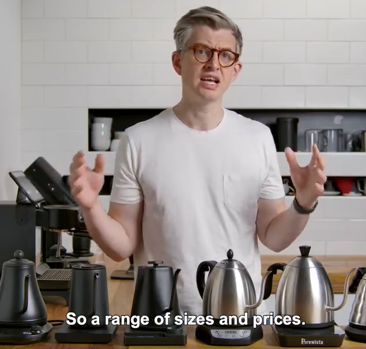
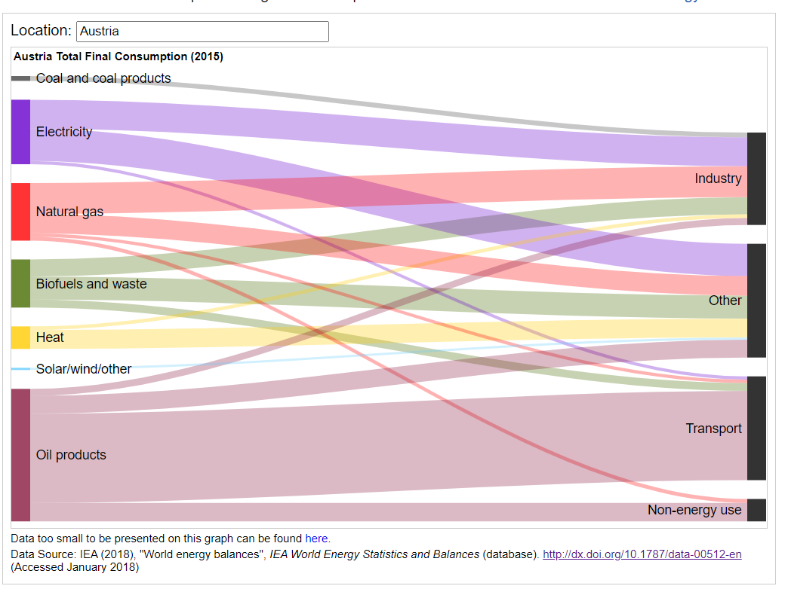
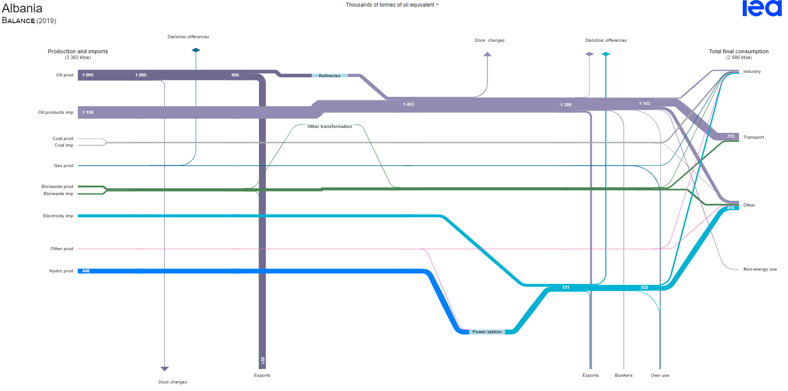
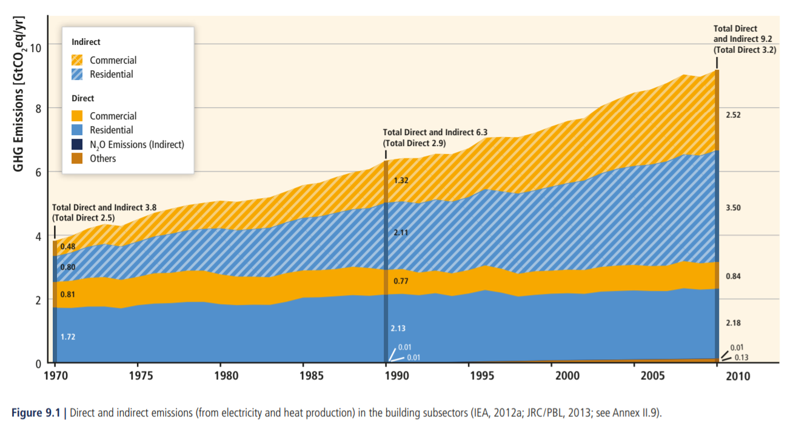
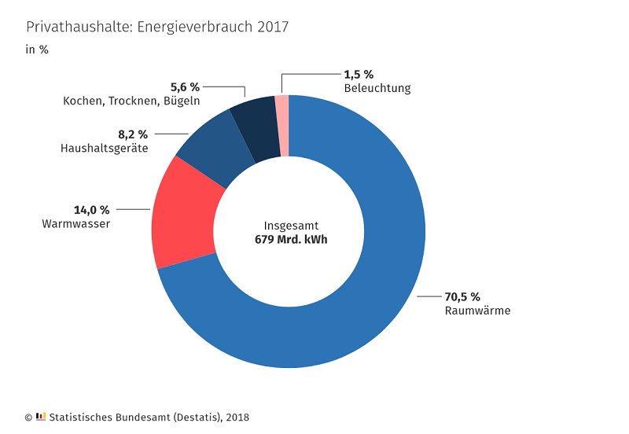
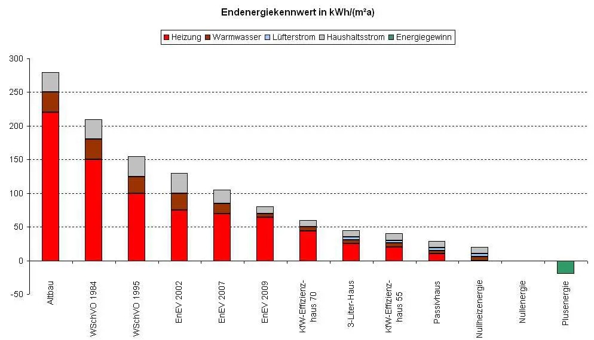
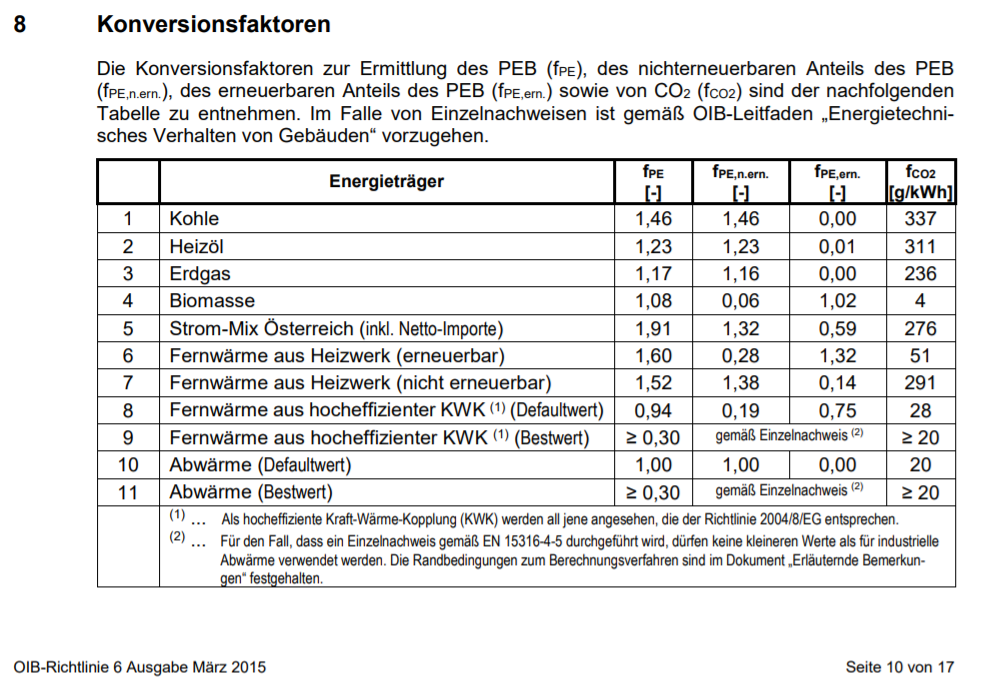
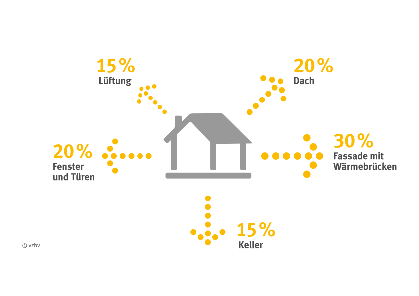
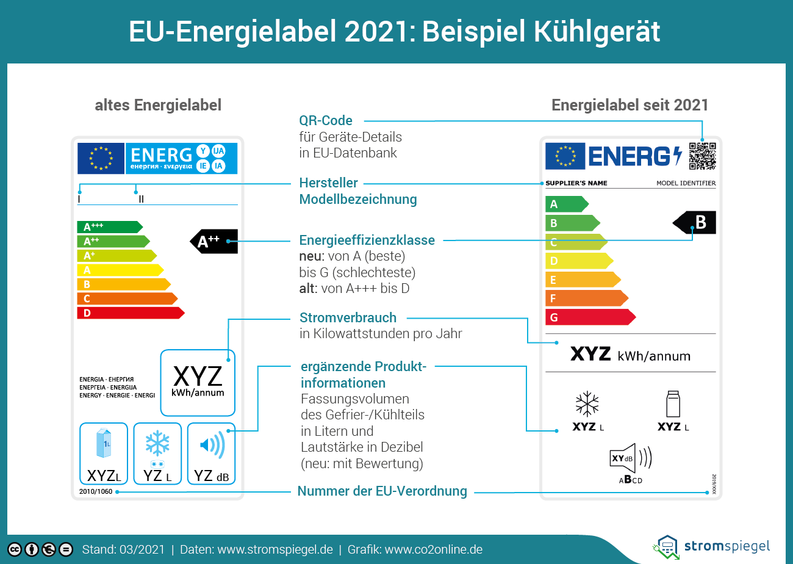

Bussysteme
SoSe 2023 Dr. Julian Huber
I Smart Metering

1 Globale Aspekte der Energieversorgung
🯠Lernziele
Nach dieser Einheit sind Sie in der Lage dazu * Primär- und Endenergiebedarf zu unterscheiden * eine Einschätzung über den Energiebedarf verschiedener Sektoren zu geben * Das Energiepolitische Zieldreieck zu beschreiben
Wie viele "Energie-Sklaven" benötigen wir?
the energy slave is a unit of measurement that allows us to better understand and evaluate the consequences of our life choices. An energy slave works to produce energy 24 hours a day. He produces an average power output of 100 W (875 kWh/year)

Tourane Corbière-Nicollier & Olivier Jolliet 2001

https://www.bpb.de/kurz-knapp/zahlen-und-fakten/globalisierung/52758/verbrauch-von-primaerenergie-pro-kopf/
🧠Primärenergie?
misst den gesamten Energiebedarf (eines Landes). Er umfasst den Verbrauch des Energiesektors selbst, Verluste bei der Umwandlung (z.B. von Öl oder Gas in Elektrizität) und Verteilung von Energie sowie den Endverbrauch durch die Endverbraucher. Ausgeschlossen sind Energieträger, die für nichtenergetische Zwecke verwendet werden (z.B. Erdöl, das nicht zur Verbrennung, sondern zur Herstellung von Kunststoffen verwendet wird).
https://ec.europa.eu/eurostat/statistics-explained/index.php?title=Glossary:Primary_energy_consumption#:~:text=Primary%20energy%20consumption%20measures%20the,final%20consumption%20by%20end%20users.
🧠Primary and final energy consumption

https://energyeducation.ca/encyclopedia/Total_final_consumption
https://upload.wikimedia.org/wikipedia/commons/b/b4/Energiegruppen_Bilanzbereich_AGEB.png
🤓 Tonne of oil equivalent?
(toe) ist eine Energieeinheit, die als die Energiemenge definiert ist, die bei der Verbrennung einer Tonne Rohöl freigesetzt wird. Sie beträgt etwa 42 Gigajoule oder 11,630 MWh

https://en.wikipedia.org/wiki/Tonne_of_oil_equivalent, http://www.huashuochem.com/wap_product_detail_en/id/29.html
Wie viele "Energie-Sklaven" benötigen wir?
- \(\text{No. of Energy Slaves}\) \(= 3.7 \frac{toe}{a} \cdot 11.630 \frac{MWh}{toe} \cdot 1000\frac{kWh}{MWh} \frac{1}{875}\frac{a}{kWh} = 49.2\)
- Jeder Europäer benötigt mehr als 50 virtuelle Energiesklaven, die Tag und Nacht arbeiten!
Wasserkocher
- \(P = 3.7 \cdot \frac{11,630}{8760}\frac{kWh}{h}=4.9kW\)
- als würden mehrere Wasserkocher kontinuierlich durchlaufen

James Hoffmann
Is it bad to have too many energy slaves / kettles?
Ökonomie
-
Kosten: Energieerzeugung ist teuer

-
This forecast was from before Russias attack on Ukraine
https://www.bloomberg.com/news/articles/2022-03-16/energy-costs-set-to-reach-record-13-of-global-gdp-this-year
Endenergieverbrauch nach Sektoren

https://www.iea.org/reports/key-world-energy-statistics-2020/final-consumption
Nachfrageseite: Endverbrauch nach Sektoren
- Privathaushalte: Heizen, Kochen, Kühlen, usw.
- Verkehr: Transport von Personen und Gütern
- Gewerblich: Verkauf von Waren und Dienstleistungen
- Industrie: Herstellung von Waren, in der Regel aus Rohstoffen.
- Landwirtschaft: Energieverbrauch: Düngemittel, Licht, Wärme, Maschinen
Gesamtprimärenergieversorgung der Welt nach Quellen

https://www.iea.org/reports/key-world-energy-statistics-2020
🤓 Gesamtprimärenergieversorgung im Jahr ?

Malanima (2013)
🤓 Gesamtprimärenergieversorgung im Jahr ?
Schätzungen der Waldrodung in Mitteleuropa (Deutschland, Nordostfrankreich) anhand archäologischer Holzreste 200 v. Chr. bis 400 v. Chr. (dekadische Daten; jeder Punkt des Diagramms steht für die Intensität des Holzeinschlags).
###### Malanima, P. (2013). Energy consumption in the Roman world. In The Ancient Mediterranean Environment between Science and History (pp. 13-36). Brill
Energiepolitisches Zieldreieck

Energiebilanzen von Industrieländern

https://energyeducation.ca/encyclopedia/Total_final_consumption
Landesweite Energiebilanzen

International Energy Agency
Zusammenfassung
- Der größte Teil der Primärenergie weltweit stammt immer noch aus nicht erneuerbaren Energiequellen
- Sichere, erschwingliche Energie ist eine der wichtigsten Triebfedern der menschlichen Entwicklung
- Energie wird in allen Sektoren benötigt (Haushalt, Transport, Produktion)
- Nur ein kleiner Teil der Energie wird in elektrische umgewandelt
🯠Lernfortschritt
Nach dieser Einheit sind Sie in der Lage dazu * Primär- und Endenergiebedarf zu unterscheiden * eine Einschätzung über den Energiebedarf verschiedener Sektoren zu geben * Das Energiepolitische Zieldreieck zu beschreiben
2 Eine kurze Einführung in die Energiewirtschaft
🯠Lernziele
Nach dieser Einheit sind Sie in der Lage dazu - die Marktrollen im Energiemarkt und deren Interessen zu beschreiben - die Struktur des Stromnetzes zu beschreiben - Preisbildung auf dem Spot-Markt zu beschreiben
Energiekosten und Erlöse

https://kurier.at/wirtschaft/energiekosten-insgesamt-um-24-milliarden-euro-gestiegen/402181017
Stadtwerke-Welt (mit Beginn der Elektrifizierung 19 Jhd.)
- Ein Stadtwerk betreibt Netz und Stromerzeugung in seinem Netzgebiet
- Monopolstellung der Stadtwerke

Europäische Energiemarktintegration

- Entwicklung eines gemeinsamen Europäischen Stromnetzes (Ausfallsicherheit)
- und Binnenmarktes
- Aus integrierten Stadtwerken (und Energiekonzernen) werden getrennte Netzbetreiber und Energieversorgungs-unternehmen (EVU)
Europäische Energiemarktintegration
- Alle Marktteilnehmer handeln Energiemengen frei miteinander
- Netz wird von neutralen Netzbetreibern verantwortet
- Handel von Strom kann bilateral oder auf der Europäischen Strombörse (EEX) stattfinden
- Netzrestriktionen werden innerhalb einzelner Länder vom Markt ignoriert
- Solange keine Netzrestriktionen an den Grenzkuppelstellen bestehen haben Länder den gleichen Strompreis
- Eine ähnliche Logik gilt für den Gas-Markt
Trennung von Natürlichem Monopol (Netz) und Markt (Energie)
- Beim Stromnetz handelt es sich um ein natürliches Monopol (ebenso Gas und Eisenbahn)
- Kein Mitbewerber kann ein Parallelnetz aufbauen, und dieses günstiger anbieten
- Idee: Netz und Energie werden getrennt behandelt
- Dies soll den Europäischen Austausch fördern und Kosten senken
https://www.europarl.europa.eu/factsheets/de/sheet/45/energiebinnenmarkt

Elektrische Energie aus Strom ist ein Homogenes Gut
- Eine kWh Strom kann überall im Europäischen Stromnetz eingespeist werden
- Eingespeiste und entnommene Energie können nicht nachverfolgt werden
- Das Netz wird nicht beachtet (Kupferplatte, Zonales Preissystem)

https://traumshop.net/shop/highlights/atomstromfilter/
Ökostrom
- EVU, dies Ökostrom anbieten haben folgende Möglichkeiten
- Ökostrom selbst produzieren
- per Liefervertrag einkaufen
-
handelbare Erzeugungszertifikate erwerben
-
Mengengleiche Ökostromversorgung: Ausgleich übers Jahr
- Zeitgleiche Ökostromversorgung: Ausgleich in jeder Viertelstunde

Rollen auf dem Energiemarkt (vereinfacht)

Rollen auf dem Energiemarkt (vereinfacht)
- Ein Unternehmen kann gleichzeitig unterschiedliche Rollen einnehmen
- Stromanbieter: Große Erzeuger vom elektrischem Strom (Kraftwerksparks) verkaufen Energiemengen
- Stromnachfrager: Energieversorgungsunternehmen (EVU) kaufen Energiemengen
- Endverbraucher: Haushalte und Gewerbe, beziehen Strom von den Energieversorgungsunternehmen und rechen über Tarife ab (nur sehr große Firmen handeln selbst auf der Strombörse)
- Netzbetreiber: Greifen nicht in den Handel mit Strom ein
Angebot und Nachfrage
- Stromanbieter bieten zu marginalen Kosten an: Was immer es kostet eine MWh elektrischen Strom zu produzieren
- Erneuerbare Erzeuger haben marginale Kosten von 0 €/MWh
- Gaskraftwerke sind teuer
- Kapitalkosten werden nicht eingepreist (sunk costs)
- Stromnachfrager sind unelastisch: EVU müssen beschaffen, was Haushalte und Gewerbe beziehen
marginale Kosten/Grenzkosten: Kosten die anfallen, um eine zusätzliche Einheit zu produzieren
Merit Order Modell
Ökoinstitut Freiburg
Merit Order Modell
- Die Aufreihung des Angebots wird als Merit Order bezeichnet
- In jeder Viertelstunde wird die der Einsatz der Erzeuger nach der Merit Order festgelegt
- Es muss immer genau so viel Strom abgenommen, wie eingespeist werden
- Die Nachfrage kann kurzfristig als nicht-elastisch (preis-unabhängig) angenommen werden
- Der Schnittpunkt zwischen Angebot und nachfrage bestimmt den Preis
- All abgerufenen Kraftwerke erhalten den Preis, den das letzte Kraftwerk erzielt
Ohne diese Regel (Pay-as-Bid) gäbe es ein Anreiz für strategisches Verhalten der Bieter
Preis-Schwankung Intraday

https://energy-charts.info/charts/price_spot_market/chart.htm?l=de&c=DE&week=44&legendItems=011010000010
Preis-Schwankung Intraday
- Je nach Last und Erzeugungssituation stellen sich unterschiedliche Preise ein
- EVU haben ein Interesse den Verbrauch ihrer Kund:innen in Richtung der günstigen Stunden zu verschieben
- Zeit-dynamische Tarife
- Unterbrechbare Lasten
- Das würde die Elastizität/Flexibilität der Nachfrage erhöhen
- EVUs müssen in teuren Stunden weniger Strom beziehen
- Geschieht dies nicht im ausreichenden Maße
- Strompreis steigt
- Mehr Emissionen
- Lastabschaltungen
Struktur des Stromnetz

https://upload.wikimedia.org/wikipedia/commons/b/b0/Stromversorgung.svg

https://www.hochspannungsblog.at/Wissenswertes/Netzbetreiber/Uebertragungsnetz
Übertragungsnetz
- Maschen-Topologie
- Engpässe bei starken lokalen Ungleichgewichten
- Marktergebnis kann nicht umgesetzt werden: Redispatch
- Weitere Aufgaben der Übertragungsnetzbetreiber
- Frequenzhaltung
- Systemreserve
Verteilnetz
- Ring- oder Strang-Topologie
- Engpässe bei hohen Gleichzeitigkeiten
- Wärmepumpen
- "Zahnarzt-Allee" 🔥_🚗🚗🚗🚗🚗
- PV-Rückspeisung 🔥_⚡⚡⚡⚡⚡

Nachfrage: Relevanz der elektrischen Energieversorgung
https://www.presseportal.de/pm/43338/1208607
Nachfrage: Zunehmende Elektrifizierung

https://www.heizspiegel.de/heizkosten-pruefen/heizkosten-pro-m2-vergleich/
Nachfrage: Emissionsvermeidung durch Elektrifizierung

https://de.wikipedia.org/wiki/Sektorenkopplung#/media/Datei:Prim%C3%A4renergievergleich_fossile_Energie_und_erneuerbare_Energien.png
Angebot: Anstieg volatiler Erneuerbarer Energien

https://www.oekosystem-erde.de/html/energiezukunft-03.html
🧠Fazit
- Strom als "wertvollster" Energieträger, da geringe Umwandlungsverluste
- zunehmend höherer Teil an Energiedienstleistungen wird aus Strom gedeckt
- Stromangebot wird zeitlich flexibel (Photovoltaik und Wind nicht immer verfügbar - Dunkelflaute)
- Nicht nur Menge des Strombezugs, sondern auch dessen Zeitpunkt ist entscheidend
- EVU und Netzbetreiber benötigen Daten über Erzeugung und Verbrauch zu Planung und Optimierung
- EVU und Netzbetreiber haben Anreize den Verbrauch der Endverbraucher steuernd zu beeinflussen
🯠Lernziele
Nach dieser Einheit sind Sie in der Lage dazu - die Marktrollen im Energiemarkt und deren Interessen zu beschreiben - die Struktur des Stromnetzes zu beschreiben - Preisbildung auf dem Spot-Markt zu beschreiben
3 Energiebedarf von Gebäuden
🯠Lernziele
Nach dieser Einheit sind Sie in der Lage dazu * Energieverbraucher im Haushalt nach Energiemengen zu ordnen * Mögliche Energieträger eines Gebäudes zu beschreiben * Den Primärenergiebedarf eines Gebäudes aus dem gemessen Endenergiebedarf abzuschätzen
🧠Relevanz des Gebäudeenergieverbrauch
- etwa 1/3 des globalen Energiebedarfs
- Ein großer Hebel für Wirtschaftlichkeit und Energieeffizienz
- Großer Anteil indirekter Emissionen (z.B. Strom der nicht vor Ort produziert wird)

https://www.ipcc.ch/site/assets/uploads/2018/02/ipcc_wg3_ar5_chapter9.pdf

https://www.effizienzhaus-online.de/energieverbrauch-haus/

https://www.passivhaus.de/passivhaus/
🧠Energie-Definitionen

- Nutzenergie (\(Q^N\)): Tatsächlich im Gebäude zweckdienlich genutzte Energie
- Endenergie (\(Q^E\)): Im Gebäude verbrauchte (und meist gemessene) Energie
- Primärenergiebedarf (\(Q^P\)) bezieht die gesamte Wertschöpfungskette bis zum Gebäude mit ein (incl. indirekte Emissionen)
Endenergieträger in Gebäuden
- Elektrische Energie
- Netzbezug
- Lokale Erzeugung
- Gas
- Leitungsgebunden
- Öl
- Speicher
- Biomasse
- Speicher
🤓 Nichterneuerbarer Primärenergiebedarf
- \(Q^{P,ne}\) ergibt sich für alle zur Versorgung des Gebäudes erforderlichen Endenergieträger \(i\):
- \(Q^E_{i}\) ... Endenergieträger i (z.B. Gas, Strom)
- \(f^{P,ne}_i\) ... Primärenergiefaktor des nicht- erneuerbaren Anteils des Endenergieträgers \(i\)
https://www.ingenieure.immo/wiki/bauphysik/nutz-end-und-prim%C3%A4renergie/
🤓 Primärenergiefaktoren
- hängen von der Vorkette ab
- schwer zu berechnen
- EN 15316 Heizungsanlagen in Gebäuden – Verfahren zur Berechnung der Energieanforderungen und Nutzungsgrade der Anlagen
- Deutschland Energieeinsparverordnung von 2007 und DIN V 18599-1 und DIN 4701-10/A1
- Österreich ÖNORM EN 15316-4-5 (bisher nur in der Beurteilung von Fernheizsystemen)

https://www.geo.de/natur/nachhaltigkeit/19619-rtkl-stromerzeugung-was-ist-eigentlich-so-klimaschaedlich-braunkohle

🤓 Primärenergiefaktoren nach OIB
- Primärenergiebedarf (PEB) (\(f^{P}\) bzw. \(f_{PE}\))
- nichterneuerbaren Anteils des PEB (\(f^{P,ne}\) bzw. \(f_{PE, n.ern.}\))
- erneuerbaren Anteils (\(f^{P,e}\) bzw. \(f_{PE, ern.}\))
- sowie des \(CO_2\)-Emissionsfaktors (\(f_{CO2}\))
Österreichisches Institut für Bautechnik (OIB): OIB-Richtlinie 6 – Energieeinsparung und Wärmeschutz, März 2015
🤓 Primärenergiefaktoren nach OIB
- Interpretation: Das Verbrennen von \(1 kWh\) Heizöl als Endenergie führt zur einem nichterneuerbaren Primärenergiebedarf von \(1.23~kWh\) Heizöl und einem erneuerbaren Primärenergiebedarf von \(0.0123~kWh\). Dabei werden \(CO_2\) Emissionen von \(311~g/kWh\) verursacht.
- Die Nutzenergie ist dabei kleiner als \(1~kWh\).
Österreichisches Institut für Bautechnik (OIB): OIB-Richtlinie 6 – Energieeinsparung und Wärmeschutz, März 2015
🤓 Flächenbezug
In der Regel wird der so bestimmte nichterneuerbare Primärenergiebedarf auf eine definierte Fläche bezogen: * bei Wohngebäuden auf die Wohnfläche (Bestimmung nach z.B. EnEV), * bei Nichtwohngebäuden auf die Nettoraumfläche (siehe DIN 277-1)
\(A^{bez}\) ... Energiebezugsfläche
🤓 Jahresbezug

https://www.verbraucherzentrale.de/wissen/energie/energetische-sanierung/so-kommen-sie-an-einen-energieausweis-fuer-ihre-immobilie-24058
🤓 Aufgabe
Berechnen Sie für für das Gebäude die jährlichen Heizkosten, \(CO_2\)-Emissionen (\(f_{CO2}\)) flächen-bezogenen nichterneuerbaren Primärenergiebedarf (\(q^{P,ne}\)) für eine Biomasse- und eine Erdgasheizung.
- Wohnfläche: \(800 m^2\)
- Endenergiebedarf: \(153 \frac{kWh}{m^2 a}\)
- Gaspreis: \(0.06 \frac{€}{kWh}\)
- Pelletpreis: \(0.05 \frac{€}{kWh}\)
https://docs.google.com/spreadsheets/d/11W776uMNFQVS4KG3XLIl2LF8DalNMbRFS1L_l3F_f7A/edit?usp=sharing
🤓 Lösung
- Gas:
- \(Q^{P,ne}_{gas}=153 \frac{kWh}{m^2 a} \cdot 800 m^2 \cdot 1.16 = 141{,}984 \frac{kWh}{a}\)
- \(C_{gas}=153 \frac{kWh}{m^2 a} \cdot 800 m^2 \cdot 0.06 € = 7{,}344 \frac{€}{a}\)
- \(m^{CO_2}_{gas} =Q^{P}_{gas} f_{CO_2} =153 \frac{kWh}{m^2 a} \cdot 800 m^2\cdot 236 \frac{g}{kWh} = 28{,}9 \frac{t}{a}\)
🯠Lernziele
Nach dieser Einheit sind Sie in der Lage dazu * Energieverbraucher im Haushalt nach Energiemengen zu ordnen * Mögliche Energieträger eines Gebäudes zu beschreiben
4 Einfluss der Gebäudeautomatisierung auf die Energetische Bewertung
🯠Lernziele
Nach dieser Einheit sind Sie in der Lage dazu - die vier Energieeffizienzklassen nach EN 15232 zu unterscheiden - ein Abschätzung der Effizienzsteigerung nach EN 15232 vorzunehmen
🧠Einfluss der Gebäudeautomatisierung auf die Energetische Bewertung
- Größter Hebel ist die Technologieauswahl und effiziente Auslegung während der Planung
- Energiesparen bedeutet aus Sicht der Raumautomation vor allem Verschwendung zu vermeiden z.B.:
- Kühlen oder Heizen bei offenem Fenster,
- eingeschaltete Beleuchtung bei ausreichendem Tageslicht,
- beheizte ungenutzte Räume

Energierelevante Gebäudetechnik
- Sensorik
- Intelligente Zähler (Smart Meter)
- Anwesenheitserkennung
- Fensterkontakt
- Aktorik
- Heizung
- Lüftung
- Kühlung etc.
- Verschattung
Abschätzung der Effizienzsteigerung mit EN 15232

- ca. 40 weitere Normen betreffen die effiziente Planung von Gebäuden
- die EN15232 berechnet speziell den Einfluss der Gebäudeautomation und des GebäudeÂmanagements für thermische und elektrische Installationen
https://www.baulinks.de/webplugin/2012/2142.php4
Abschätzung der Effizienzsteigerung nach EN 15232
- Einfach gesagt: Die Norm gibt an, was an Gebäudeautomatisierung sinnvoll und notwendig ist, um bestimmte Effizienzklassen zu erreichen
- Anders als beim Primärenergiefaktor geht es hier nicht um die Berechnung konkreter Werte
Effizienzklassen

https://www.co2online.de/energie-sparen/strom-sparen/strom-sparen-stromspartipps/eu-energielabel-ab-2021/
Effizienzklasse A
- Die Norm gibt vier Effizienzklassen für Gebäude und Wohnhäuser an (Klasse C ist die Referenzklasse; Auszug aus Tabelle 2 der EN15232):
| Heizen/ Kühlen | Air conditioning | Beleuchtung | Sonnenschutz | |
|---|---|---|---|---|
| A | z.B. EinzelraumreÂgelung mit KomÂmunikation und BedarfsanfordeÂrung | z.B. Zuluftregelung mit lastabhängigem Sollwert | autom. Beleuchtung z.B. mit automatiÂscher AnwesenheitsÂerfassung | kombinierte Steuerung von Jalousien und Temperatur |
Effizienzklassen B und C
| Heizen/ Kühlen | Air conditioning | Beleuchtung | Sonnenschutz | |
|---|---|---|---|---|
| B | z.B. EinzelraumreÂgelung mit KomÂmuÂnikation z.B. stufig gereÂgelÂte Pumpen | z.B. mehrstufige Ventilatorsteuerung | autom. Beleuchtung z.B. mit automatiÂscher AnwesenheitsÂerfassung | automatische Steuerung der Jalousien |
| C | z.B. EinzelraumreÂgelung mit TherÂmosÂtatventil | z.B. Ventilator mit Ein/Aus-Steuerung | manuelle LichtsteueÂrung | manuelle Bedienung der motorisierten Jalousien |
Effizienzklasse D
| Heizen/ Kühlen | Air conditioning | Beleuchtung | Sonnenschutz | |
|---|---|---|---|---|
| D | z.B. keine EinzelÂraumÂregelung z.B Pumpen nicht geregelt | z.B. keine LuftmenÂgenregelung z.B. keine ZuluftreÂgelung | manuelle LichtsteueÂrung | manuelle Bedienung der Jalousien |
🧠Die Idee dahinter
Bei der Anwendung der EN 15232 auf Sanierungsprojekte mit bekanntem EnergieÂverbrauch können dadurch die Einsparungen bei geplanten Investitionen in die Gebäudeautomation mittels eines Rechenfaktors (\(f^{BSCS}\)) leicht überÂschlagen werden:
- \(f^{BSCS,th}\) ... für die thermischen Verbraucher
- \(f^{BSCS,el}\) ... für die elektrischen Verbraucher
- \(Q^{E, vor}\)... Endenergiebedarf vor Renovierung
- \(Q^{E, nach}\) ... Endenergiebedarf nach Renovierung mit Gebäudeautomatisierung
Tabelle: Thermische Effizienzfaktoren \(f^{BSCS,th}\)
| D (Nicht energieeffizient) | C (Standard / Referenz) | B (Erweitert) | A (Hohe Energieeffizienz) | |
|---|---|---|---|---|
| Büros | 1,51 | 1 | 0,80 | 0,70 |
| Hörsaal | 1,24 | 1 | 0,75 | 0,50 |
| Schulgebäude | 1,20 | 1 | 0,88 | 0,80 |
Tabelle: Elektrische Effizienzfaktoren \(f^{BSCS,el}\)
| D (Nicht energieeffizient) | C (Standard / Referenz) | B (Erweitert) | A (Hohe Energieeffizienz) | |
|---|---|---|---|---|
| Büros | 1,10 | 1 | 0,93 | 0,87 |
| Hörsaal | 1,06 | 1 | 0,94 | 0,89 |
| Schulgebäude | 1,07 | 1 | 0,93 | 0,86 |
| Krankenhäuser | 1,05 | 1 | 0,98 | 0,96 |
✍️ Aufgabe
Im ersten Planungsstand wird der neue Audimax (als eigenes Gebäude) mit einer Gebäudeautomatisierung geplant, die elektrisch Effizienzklasse C und thermisch Klasse D entspricht. Geben Sie eine erste Einschätzung, wie viel elektrische und thermische Energie eingespart werden kann, wenn der Hörsaal stattdessen jeweils mit Effizienzklasse B geplant wird.

Lösung
- \(Q^{E, nach} = \frac{f^{BSCS,nach}}{f^{BSCS,vor}} Q^{E, vor}\)
-
\(\frac{Q^{E, nach, el}}{Q^{E, vor,el}} = \frac{f^{BSCS,nach,el}}{f^{BSCS,vor,el}} = \frac{0,94}{1} =94\%\)
-
\(\frac{Q^{E, nach, th}}{Q^{E, vor, th}} = \frac{f^{BSCS,nach,th}}{f^{BSCS,vor,th}} = \frac{0,75}{ 1,24} =60\%\)
🯠Lernziele
Nach dieser Einheit sind Sie in der Lage dazu - die vier Energieeffizienzklassen nach EN 15232 zu unterscheiden - ein Abschätzung der Effizienzsteigerung nach EN 15232 vorzunehmen
5 Smart Metering
🯠Lernziele
Nach dieser Einheit sind Sie in der Lage dazu * Schnittstellen eines Smart Meters zu benennen * Funktionen intelligenter Messsysteme beschreiben * Vorteile und Anwendungsfälle einer Echtzeitmessung erläutern
🧠Herkömmliche Zähler
- integrierende Messung
- keine Messzeitreihe
- Visuelles Ablesen eines Momentanwerts
Standardlastprofile
- auf historischen Daten basierende Annahmen über typische Verbrauchsmuster
- gemittelt (enthalten keine Lastspitzen)
- dienen der Planung (z.B. Auslegung des Netzes, Beschaffung von Strom an der Strombörse)
- zunehmend unpräzise
https://blog.naturstrom.de/intern/standardlastprofil/
🧠Intelligente Zähler
-
(Smart Meter) sind Gas-, Wasser- oder Stromzähler, die digital Daten auszeichnen, senden und ggf. auch empfangen (Busteilnehmer)
-
Basisfunktionen:
- Messung
- Datenspeicherung
- Kommunikation
Komponenten eines Smart Meters (AT)

Smart-Meter-Kurzanleitung
Kommunikation zwischen verschiedenen Rollen

Komponenten eines Intelligentes Messsystems (D)
- Strikte Trennung in zwei kompatible Komponenten:
- Modernen Messeinrichtung erfasst Energiefluss digital
- Smart Meter Gateway Kommunikations-Schnittstelle, welche die Zählerwerte speichern, Daten verarbeiten und mit einem Netzwerk kommuniziert (Kommunikationsmodul)

https://www.verbraucherzentrale.de/wissen/energie/preise-tarife-anbieterwechsel/smart-meter-die-neuen-stromzaehler-kommen-13275, Stand: 5. Februar 2021
Kommunikationsmodul
- Anbindung über diverse Bus-Systeme (Power-Line-Communication, Mobilfunk, M-Bus, TCP/IP, ...)
- ermöglicht Fernauslesung: Energieversorgungsunternehmen kann Stromverbrauch aus der Ferne ablesen
- Privatsphäre: Bedenken, dass auf Verhalten und Anwesenheit geschlossen werden kann

Kommunikationsmodul: Einführung neuer Stromtarife
- Zeitvariable Tarife: Strom kostet mehr zu Hochlastzeiten (abends, Wärmepumpen)
- Last-variable Tarife: Strom kostet in Abhängigkeit der bezogenen Leistung
- Zeit-dynamische Tarife: Strompreise können sich flexibel verändern (z.B. alle 15 Minuten)

https://www.awattar.at/
🧠Gesetzliches
- EU Richtlinie 2006: allen Mitgliedstaaten, soweit technisch machbar, finanziell vertretbar und im Vergleich zu den potentiellen Energieeinsparungen angemessen, alle Endkunden in den Bereichen Strom, Erdgas, Fernheizung und/oder -kühlung und Warmbrauchwasser individuelle Zähler
- tatsächlichen Energieverbrauch des Endkunden
-
und die tatsächliche Nutzungszeit anzeigt
-
mögliche Lösung: M-Bus Sensor + Display
Kundenschnittstelle (Home Area Network)
- in Österreich nicht fix definiert
- Spannung, Wirkleistung, Blindleistung aller Phasen
- häufig MBUS, aber auch andere Bussysteme
- teilweise verschlüsselt
Konzept für einen „Smart-Meter Kundenschnittstellen Adapter“ zur Standardisierung der Datenbereitstellung in der Kundenanlage
Stand Smart Meter Rollout Europa 2020
| Land | Durchdringung in % | Bemerkung |
|---|---|---|
| Spanien | 100 | |
| Irland | 100 | |
| Dänemark | 100 | |
| Finnland | 100 | |
| Malta | 100 | |
| Italien | 99 | Treiber Stromklau? |
| Luxemburg | 95 | |
| Österreich | 95 | Prakmatisch |
| Frankreich | 95 |
| Land | Durchdringung in % | Bemerkung |
|---|---|---|
| Griechenland | 80 | |
| Polen | 80 | |
| Rumänien | 80 | |
| Deutschland | 23 | Overengineering |
| Lettland | 23 |
https://de.statista.com/statistik/daten/studie/387142/umfrage/marktdurchdringung-von-smart-metern-in-europa-nach-laendern/
🧠Eichrecht
- abrechnungs-relevante Zähler müssen eich-rechtlich zugelassen sein
- Maß- und Eichgesetz (MEG)
- Mengenmessgeräte für Gas,
- Mengenmessgeräte für sauberes Wasser aus Versorgungsleitungen,
- Mengenmessgeräte für thermische Energie (Wärmezähler, Kältezähler),
- Elektrizitätszähler
- Zähler muss bei in Verkehr bringen der Europäischen Messgeräte-Richtlinie MID entsprechen
- Regelmäßig überprüft (geeicht) werden
https://static.fernauslese.de/uploads/Fernauslese.de-Merkblatt-Eichrecht-in-Oesterreich.pdf

🤓 Smart Meter Österreich

https://www.arbeiterkammer.at/beratung/konsument/Datenschutz/FAQs_zum_Smart_Meter.html#lg=1&slide=0
🤓 Besonderheit Deutschland
- Technische Richtlinie 03109-1 Anforderungen an die Interoperabilität der Kommunikationseinheit eines intelligenten Messsystems
- Bundesamt für Sicherheit in der Informationstechnik – BSI definierte umfassende Anforderungen, welche von der Herstellern umgesetzt werden mussten
- z.B. Übertragung über asymmetrische Verschlüsselung und Zertifizierung
- Standardisierte Basisfunktionen (Tarifanwendungsfälle)
🤓 Smart Meter Deutschland
- soll Ökosystem zum Vernetzung verschiedenster Akteure spielen
- Zusätzlich zur Kommunikationsmodul (WAN) und Kundenschnittstellen (HAN) können noch weitere Zähler integriert werden (LMN)

https://www.dke.de/de/arbeitsfelder/energy/smart-meter-energiemanagement-digitalisierung-energiewende
🤓 Tarifanwendungsfälle

https://www.ffe.de/attachments/article/851/FE_13549_Bericht_final_online.pdf
🤓 Kritik an Deutschem System
- Späte Markteinführung
- hohe Kosten (>100 €/a)
- Überreglementierung
- Kein Freitraum für Tarifentwicklung
- Anforderungen
- EVU über WAN-Schnittstelle: Abrechnung auf 15 Minuten-Basis ausreichend
- Liegenschaftsbetreiber über HAN-Schnittstelle: Mess- und Regelung in Gebäudeleittechnik erfordert höhere Auflösung (Parallelstruktur)
🤓 Einbauempfehlung Deutschland